Danza e attività di movimento a Torino e dintorni
Corsi e serate di danza, social dance, escursioni, giri in bici e attività all’aperto a Torino e dintorni.
Cerca tutti i workshop42 attività in programma · aggiornato il 9 novembre 2026
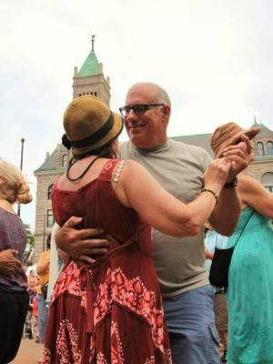
mar10novMovimentoBalfolk: laboratorio per iniziaremartedì 10 novembre, 21:00Cenisia (TO)con Bal.Un per Comala- mer11novMovimentoLaboratorio di pizzica: la danza salentinamercoledì 11 novembre, 20:00Cenisia (TO)con Sara Fusaro per Comala
 sab14novPer famiglieBattesimo della sella: prima volta a cavalloda sabato 14 novembre a domenica 15 novembreBorgo San Dalmazzo (CN)con Roberta Colombero per Ente Fiera Fredda
sab14novPer famiglieBattesimo della sella: prima volta a cavalloda sabato 14 novembre a domenica 15 novembreBorgo San Dalmazzo (CN)con Roberta Colombero per Ente Fiera Fredda sab14novMovimentoTrekking nelle Langhe: foliage tra le vignesabato 14 novembre, 09:00Monforte d’Alba (CN) · 249 €con Hiking Taste Tour
sab14novMovimentoTrekking nelle Langhe: foliage tra le vignesabato 14 novembre, 09:00Monforte d’Alba (CN) · 249 €con Hiking Taste Tour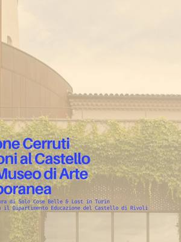
sab14novMovimentoCamminata urbana a Rivoli: Cerruti e Castellosabato 14 novembre, 10:40Rivoli (TO)con Solo Cose Belle con Lost in Turin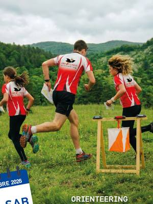
sab14novPer famiglieBorgo Orienteering: mappa e bussolasabato 14 novembre, 15:00Borgo San Dalmazzo (CN) · 5 €con ASD Orienteering Cuneo per Ente Fiera Fredda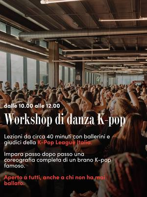
dom15novMovimentoWorkshop di danza K-pop: le coreografiedomenica 15 novembreAurora (TO)con Mercato Centrale Torino con Torino Comics dom15novMovimentoGita in bici: il Bosco del Merlinodomenica 15 novembre, 09:00–16:00Racconigi (CN) · Gratiscon Parco del Monviso
dom15novMovimentoGita in bici: il Bosco del Merlinodomenica 15 novembre, 09:00–16:00Racconigi (CN) · Gratiscon Parco del Monviso dom15novMovimentoPasseggiata e polenta in collinadomenica 15 novembre, 10:30–16:00San Mauro Torinese (TO) · da 22 €con Mulino Sambuy OdV
dom15novMovimentoPasseggiata e polenta in collinadomenica 15 novembre, 10:30–16:00San Mauro Torinese (TO) · da 22 €con Mulino Sambuy OdV dal21novMovimentoBaladi e folklore egiziano con Nada Al Bashada sabato 21 novembre a domenica 22 novembre, 10:00–16:00Parella (TO) · 240 €con Simona Evoli con Nada Al Basha
dal21novMovimentoBaladi e folklore egiziano con Nada Al Bashada sabato 21 novembre a domenica 22 novembre, 10:00–16:00Parella (TO) · 240 €con Simona Evoli con Nada Al Basha sab21novMovimentoFortango Extra: workshop di tangosabato 21 novembre, 15:00–20:00Aurora (TO)con Fortango con Michael «El Gato» Nadtochi ed Elvira Lambo
sab21novMovimentoFortango Extra: workshop di tangosabato 21 novembre, 15:00–20:00Aurora (TO)con Fortango con Michael «El Gato» Nadtochi ed Elvira Lambo sab21novMovimentoBlues dance: workshop con Dexter Santossabato 21 novembre, 15:30–18:30San Salvario (TO) · 60 €con Slow Town Blues con Dexter Santos
sab21novMovimentoBlues dance: workshop con Dexter Santossabato 21 novembre, 15:30–18:30San Salvario (TO) · 60 €con Slow Town Blues con Dexter Santos dal5dicMovimentoSnow Latin Week: salsa e bachatada sabato 5 dicembre a martedì 8 dicembre, 12:00–17:00Bardonecchia (TO) · da 299 €con Like This Agency
dal5dicMovimentoSnow Latin Week: salsa e bachatada sabato 5 dicembre a martedì 8 dicembre, 12:00–17:00Bardonecchia (TO) · da 299 €con Like This Agency dal22genMovimentoGricel Tango Weekend: seminario con Chichoda venerdì 22 gennaio a domenica 24 gennaio, 20:00San Donato (TO) · 200 €con Proyecto Gricel con Chicho Frumboli e Juana Sepúlveda
dal22genMovimentoGricel Tango Weekend: seminario con Chichoda venerdì 22 gennaio a domenica 24 gennaio, 20:00San Donato (TO) · 200 €con Proyecto Gricel con Chicho Frumboli e Juana Sepúlveda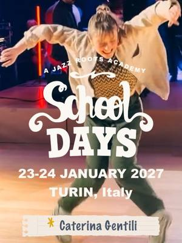
sab23genMovimentoSchool Days: workshop di swing e musicalitàsabato 23 gennaioTorinocon Dusty Jazz- datada confermareAltroCascina Roccafranca: corsi della stagioneData da confermareMirafiori (TO)con Cascina Roccafranca
- dataa sceltaMovimentoProgetto SLIP: corsi di circo e aereaData a sceltaBarriera di Milano (TO) · da 190 € all’annocon Progetto SLIP
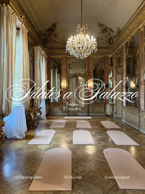
datada confermareMovimentoPilates a Palazzo: lezione e colazioneData da confermareTorinocon Rita Capparelli con Futura Pilates dataa sceltaMusica e teatroSPLIT Teatro: recitazione, musical e cantoData a sceltaMirafiori (TO)con SPLIT Teatro
dataa sceltaMusica e teatroSPLIT Teatro: recitazione, musical e cantoData a sceltaMirafiori (TO)con SPLIT Teatro dataa sceltaMovimentoStudio21: corsi di street danceData a sceltaLingotto (TO)con Studio21 Street Dance School
dataa sceltaMovimentoStudio21: corsi di street danceData a sceltaLingotto (TO)con Studio21 Street Dance School- ognivenMovimentoGruppo di cammino: camminate per over 65Ogni venerdì, 09:30–11:00Mirafiori (TO) · 5 € per 4 lezionicon UISP Torino per Casa nel Parco
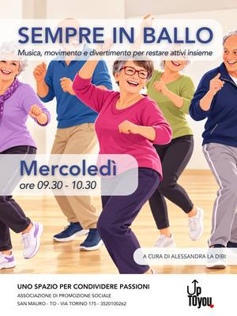
ognimerMovimentoSempre in ballo: musica e piccoli passiOgni mercoledì, 09:30–10:30San Mauro Torinese (TO)con Alessandra La Dibi per upTOyou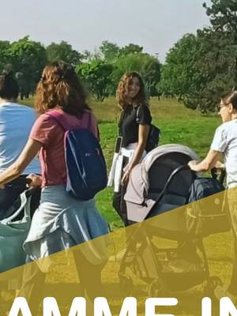
ognimarMovimentoMamme in cammino: passeggiate con i bimbiOgni martedì, 10:00–12:00Mirafiori (TO) · Gratiscon Casa nel Parco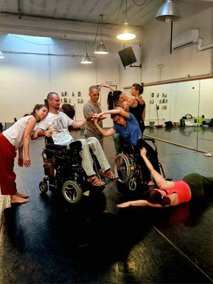
ognimerMovimentoOgni corpo danza: danza inclusivaOgni mercoledì, 10:00–11:00Aurora (TO) · da 5 € a lezionecon Giorgia Mascarello per Cecchi Point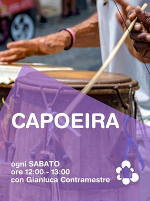
ognisabMovimentoCorso di capoeira: danza, musica e lottaOgni sabato, 12:00–13:00Mirafiori (TO) · 40 € al mesecon Gianluca Contramestre (Senzala Torino) per Casa nel Parco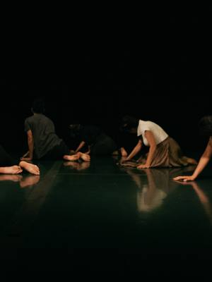
ognimarMovimentoImpro danza: movimento liberoOgni martedì, 16:00–17:00Aurora (TO) · 12 € a lezionecon Zoe Samuelov per Cecchi Point- ognimerMovimentoCorpi che raccontano: movimento per donneOgni mercoledì, 18:00–19:30Aurora (TO) · Offerta liberacon Sara Lomanto per Cecchi Point
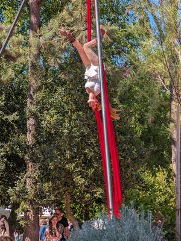
dataa sceltaMovimentoCorso di discipline aeree: trapezio e tessutiOgni lunedì e mercoledì, 18:00–22:00Aurora (TO)con Collettivo Makako per Cecchi Point ognilunMovimentoIl corpo in gioco: danzamovimento inclusivaOgni lunedì, 18:30–20:00Barriera di Milano (TO)con Cascina Macondo per Bagni Pubblici
ognilunMovimentoIl corpo in gioco: danzamovimento inclusivaOgni lunedì, 18:30–20:00Barriera di Milano (TO)con Cascina Macondo per Bagni Pubblici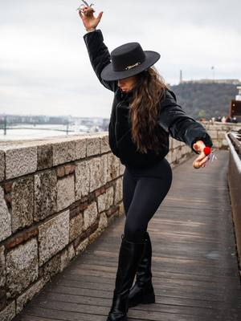
ognigioMovimentoDanze rituali: pizzica e tarantellaOgni giovedì, 18:30–20:30Barriera di Milano (TO) · 75 € al mesecon Valentina Padovan per Bunker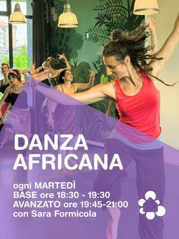
ognimarMovimentoCorso di danza africana: baseOgni martedì, 18:30–19:30Mirafiori (TO) · 40 € al mesecon Sara Formicola per Casa nel Parco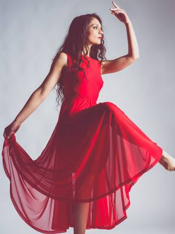
ognimarMusica e teatroQuello che ci muove: corso di teatrodanzaOgni martedì, 18:30–20:00Aurora (TO) · 50 € al mesecon Manuela Marascio per Cecchi Point ognilunMovimentoCorso di acroyoga: equilibri in coppiaOgni lunedì, 19:00–20:30Barriera di Milano (TO) · 15 € a lezionecon Bunker
ognilunMovimentoCorso di acroyoga: equilibri in coppiaOgni lunedì, 19:00–20:30Barriera di Milano (TO) · 15 € a lezionecon Bunker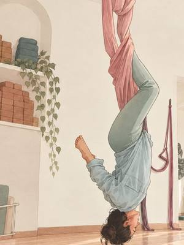
ognimerMovimentoCorso di Flying Yoga: yoga sui tessutiOgni mercoledì, 19:45–20:45Campidoglio (TO) · 18 € a lezionecon MadreIndia ognimarMovimentoCorso di Bollywood: danza indianaOgni martedì, 20:00Lingotto (TO) · 15 € a lezionecon Ruthvi Deev
ognimarMovimentoCorso di Bollywood: danza indianaOgni martedì, 20:00Lingotto (TO) · 15 € a lezionecon Ruthvi Deev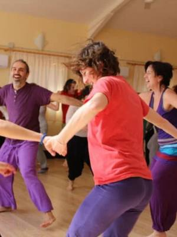
ognivenMovimentoBiodanza: musica e movimento liberoOgni venerdì, 20:30–22:30Aurora (TO)con Giancarlo Lodato per Cecchi Point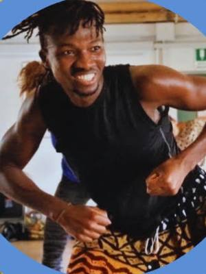
dataa sceltaMovimentoCorso di danza africana: ritmi del Burkina FasoOgni lunedì e giovedì, 20:30–22:00Aurora (TO)con Associazione Farafi per Cecchi Point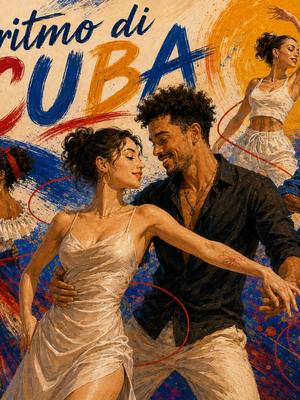
ognimerMovimentoA ritmo di Cuba: salsa e danza afrocubanaOgni mercoledì, 20:30–22:30Aurora (TO) · 8 € a lezionecon Daikor Manuel Rodriguez Hernandez per Cecchi Point ognimerMovimentoLezione di tango e milonga al NerudaOgni mercoledì, 20:30Borgo Vittoria (TO) · 12 €con Cafè Neruda
ognimerMovimentoLezione di tango e milonga al NerudaOgni mercoledì, 20:30Borgo Vittoria (TO) · 12 €con Cafè Neruda ognimerMovimentoSurfskate: lezioni al Parco DoraOgni mercoledì, 20:30Parco Dora (TO) · 20 € a lezionecon Surf In Town Community
ognimerMovimentoSurfskate: lezioni al Parco DoraOgni mercoledì, 20:30Parco Dora (TO) · 20 € a lezionecon Surf In Town Community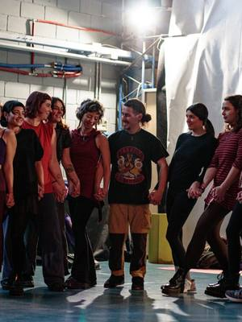
ognimerMovimentoCorso di dabka: danza del LevanteOgni mercoledì, 21:00–22:00Barriera di Milano (TO) · 50 € al mesecon Layall Chamass per Bunker- ognilunMovimentoDanza la tua essenza: movimento liberoOgni lunedì, 21:00–22:00San Mauro Torinese (TO)con upTOyou